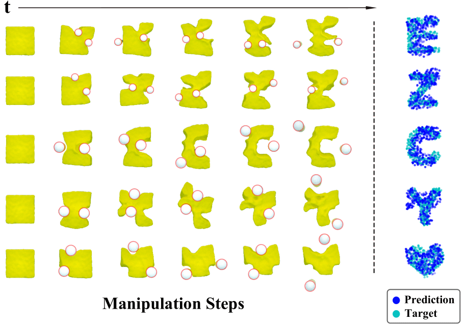
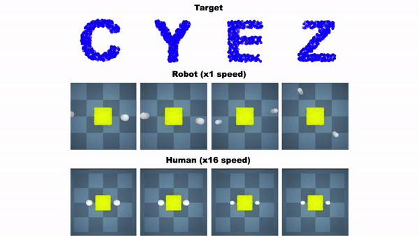
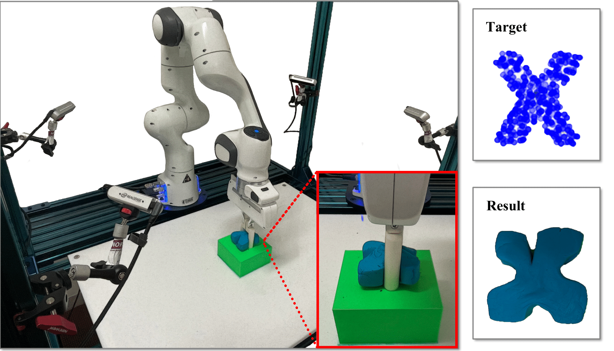

RoboCraft: Learning to See, Simulate, and Shape Elasto-Plastic Objects with Graph Networks
|
1 Stanford University
|
|
2 UC San Diego
|
|
3 Massachusetts Institute of Technology
|
RSS 2022
Abstract
Modeling and manipulating elasto-plastic objects
are essential capabilities for robots to perform complex industrial
and household interaction tasks (e.g., stuffing and pinching
dumplings, rolling sushi, making pottery). However, due to the
high degree of freedom of the elasto-plastic objects, significant
challenges exist in virtually every aspect of the robotic manipula-
tion pipeline, e.g., representing the states, modeling the dynamics,
and synthesizing the control signals. We propose to tackle these
challenges by employing a particle-based representation for
elasto-plastic objects in a model-based planning framework. Our
system, RoboCraft, only assumes access to raw RGBD visual
observations, where we transform the sensing data into particles
and learn a particle-based dynamics model using graph neural
networks (GNNs) to capture the structure of the underlying
system. The learned model can then be coupled with model-
predictive control (MPC) algorithms to plan the robot’s behavior.
We have shown through experiments that with just 10 minutes
of real-world robotic interaction data, our robot can learn a
dynamics model capable of synthesizing control signals to deform
the elasto-plastic objects into various target shapes, including
shapes that the robot has never encountered before. We provide
systematic evaluations in both simulation and the real world
to demonstrate the robot’s capabilities in manipulation and
generalization to a more complex action space, different tool
shapes, and a mixture of motion modes. We have also conducted
comparisons between the robot and untrained human subjects
on controlling the gripper to manipulate the deformable object
in both simulation and the real world. Our learned model-
based planning framework is comparable with and sometimes
better than human subjects on the tested tasks.
Full Video
Setup
Framework
Our framework RoboCraft consists of three components. The first is a particle-based scene representation module that learns to ''see'' the plasticine.
The second is a GNN-based model that ''simulates'' the object's dynamics. The third is a gradient- and sampling-based model predictive control module that
learns to ''shape'' the plasticine.
Simulation Results
|

|
RoboCraft shaping results in simulation.
|
Results on a Real Robot
Human Comparisons
|

|

|
We compare RoboCraft with human subjects in both simulation and real-world experiments. In the simulator, human subjects control the gripper using a mouse-keyboard setup. In the real world, human subjects control the robot arm directly with robot human guiding mode. We find that RoboCraft can achieve better or comparable performance.
Paper
|  |
H. Shi*, H. Xu*, Z. Huang, Y. Li, J. Wu
RoboCraft: Learning to See, Simulate, and Shape Elasto-Plastic Objects with Graph Networks
RSS, 2022.
|